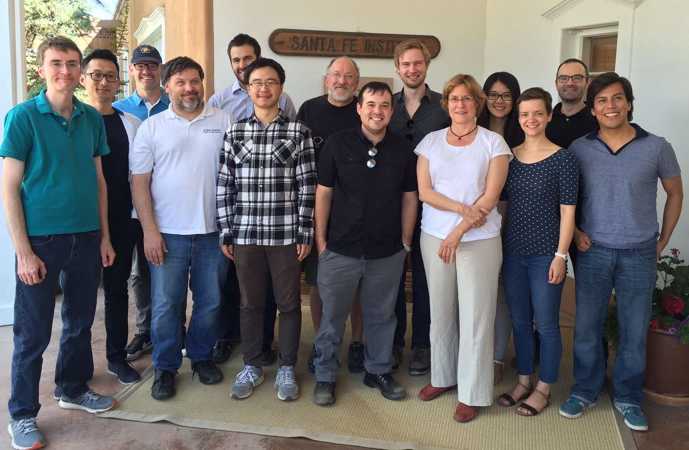

22nd! Annual Workshop
2016 Graduate Workshop in Computational Social Science Modeling and Complexity
Santa Fe Institute
, 26 June to 8 July, 2016

Program Announcement
Students
Faculty
Reading List
Schedule
Homework Problem
Student Projects
GWS Wiki
Return to
Computational Economics
page.
John H. Miller
, miller@santafe.edu.